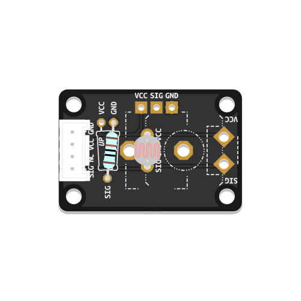

Changes its electrical resistance in response to light intensity. Can be used to detect changes in light intensity.
Learn how to make your own photoresistor here.
# --- Imports
import time
import board
import analogio
# --- Variables
# Initialize analog input connected to photo resistor
photo_resistor = analogio.AnalogIn(board.A2)
# --- Functions
# --- Setup
# --- Main loop
while True:
val = photo_resistor.value # Read the photo resistor value
print(val) # Output the value in the serial monitor
time.sleep(0.05) # Make the loop run a little bit slower
# --- Imports
import time
import board
import analogio
# --- Variables
# Initialize analog input connected to photo resistor
photo_resistor = analogio.AnalogIn(board.A2)
# --- Functions
# Make a function to convert from analog value to voltage.
def analog_voltage(adc):
return adc.value / 65535 * adc.reference_voltage
# --- Setup
# --- Main loop
while True:
val = photo_resistor.value # Read the photo resistor value
volts = analog_voltage(photo_resistor) # Convert to voltage
# Print the values
print('Photo resistor value: {0} voltage: {1}V'.format(val, volts))
time.sleep(0.05) # Make the loop run a little bit slower